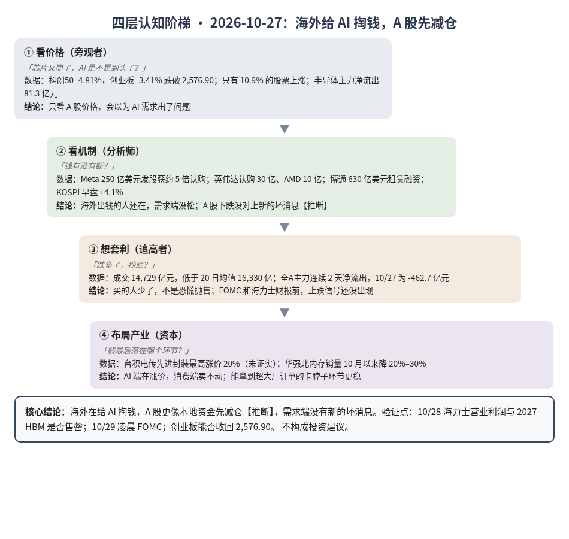
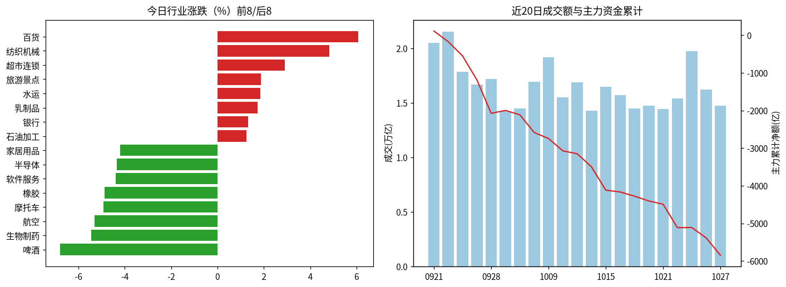
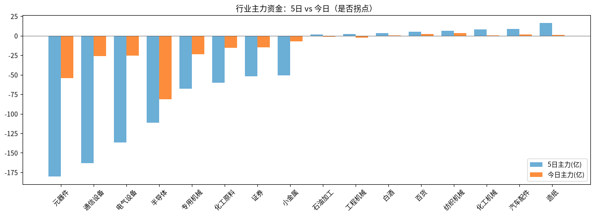

A股投研日报 · 2026-10-27（四层认知版）
- 主线
- 海外在给 AI 掏钱，A 股却在卖芯片股；没对上新的坏消息，更像本地资金减仓
- 最重要变化点
- 创业板 -3.41% 收 2,548.15，跌破 2,576.90；科创50 -4.81%，只有 10.9% 的股票上涨；半导体主力净流出 81.3 亿元，同日韩国 KOSPI 早盘涨 4.1%
- 机制含义
- 海外"谁出钱"有了答案（Meta 250 亿美元发股获约 5 倍认购），需求端没松；A 股下跌更像 FOMC 前本地资金减仓【推断】
- 下一个观察点
- 10/28 海力士财报：营业利润明显低于一致预期 76.96 万亿韩元（10/23 口径）或不说 2027 HBM 基本售罄；10/29 凌晨 FOMC 若加息，AI 链进入需求与资本双重检验
本报告为基于公开数据的研究分析，不构成投资建议。
今日市场概况
数据管道速览（Tushare 收盘数据，规则生成，正文判断见下文）
- 指数：上证指数 -1.33% 收 3,648.30，创业板指 -3.41% 收 2,548.15；深证成指 -2.50%、科创50 -4.81%、上证50 -0.80%、沪深300 -1.32%、中证500 -3.00%、中证1000 -3.07%（Tushare）。
- 量能与宽度：成交 14,729 亿元（20 日均 16,330 亿元）；上涨 606 家 / 下跌 4,922 家，上涨占比 10.9%，个股中位数 -3.0%。
- 主力资金：全 A 主力 -462.7 亿元，连续第 2 日净流出。
- 行业：主力流入居前 银行（+7.2 亿）、纺织机械（+3.5 亿）、铝（+2.3 亿）；流出居前 半导体（-81.3 亿）、元器件（-54.3 亿）、软件服务（-42.0 亿）。
- 龙虎榜 / 北向：机构专用席位合计 -2.38 亿元；沪深股通成交前五 药明康德、贵州茅台、宁德时代、中际旭创、北方华创（成交额≠净买入）。
变化点
方法：四层认知阶梯 + 历史周期律。数据 Tushare（见附录）。不构成投资建议。
一、世界观定位
阶段不变，回退条件不变。五盏灯仍是 4 黄 1 红（估值红）。两项借钱指标转绿：美国高收益债利差（垃圾债比国债多付的利息）330bp，美债波动率 MOVE 97.9。美联储议息会（FOMC）本周按兵不动的概率 92.8%，12 月加息 25bp 的概率 77.7%（源）。
二、变化一：海外给 AI 掏钱，A 股卖芯片股
同一天、同一批新闻，海外和 A 股给出了相反的答案。
- 海外有人接钱：Meta 把发股规模从 225 亿美元加到 250 亿美元，认购约为发行量的 5 倍，定价只比上周五收盘低 2.7%（源）。英伟达认购 30 亿美元（源），AMD 认购 10 亿美元（源）。美国银行、黑石等四家安排 630 亿美元，买博通芯片再租给 Anthropic（源）。
- 海外芯片股涨：韩国 KOSPI 早盘涨 4.1%，SK 海力士涨超 7%（源）。当晚费城半导体指数涨约 4%（源）。
- A 股反着走：创业板开盘一度涨 1.05%，收盘 -3.41%。全市场只有 606 家上涨。成交 14,729 亿元，低于 20 日均值 16,330 亿元。半导体主力资金（大单和特大单的净买卖）净流出 81.3 亿元，元器件 -54.3 亿元。
判断：A 股这次跌，没对上新的需求坏消息，更像本地资金在 FOMC 和海力士财报前先减仓推断。成交缩量，说明是买的人少了，不是恐慌抛售。漏洞：我们只扫了公开快讯，可能漏掉只在 A 股流传的消息。
三、变化二：AI 端涨价，消费端卖不动
- 台积电传将把先进封装（把芯片和 HBM 拼在一起的工序）最高涨价 20%，公司未证实（源）。属实的话，读数支持 G13。
- 景旺电子称 AI 算力板订单能见度更高（公司称，源）。
- 另一头，华强北 16G、32G 内存条只降了 20–50 元，但商家称 10 月以来销量普遍降 20%–30%（源）。
判断：AI 端在涨价，消费端已经卖不动，正是 G26 说的"两种行情"。但这只是一个零售渠道的读数。
四、上一交易日验证点回顾（10/26 → 10/27）
| 验证点 | 结果 |
|---|---|
| 通信设备+元器件 < -50 亿 | 命中：-80.5 亿元 |
| 创业板收复 2,650 / 跌破 2,576.90 | 命中"反弹失败"：收 2,548.15 |
| 10/28 海力士与 FOMC | 待验证 |
| 本周算力云再跌超 10% 或融资失败 | 待验证：当天反向，CoreWeave +7.94% |
五、供应链风险敞口（人工复核版）
脚本版见 risk_section_20261027.md。口径为 GB300/NVL72 当量柜年化系统价值；Δ$ 为事件类型假设模板，仅用于排序，非预测。脚本 4 条，误匹配 3 条。有效 1 条：日本富冈 M4.8 地震，距 Nittobo 福岛厂约 110 公里，未见停产报道，Δ$ 记 0。复核后有效断供 Δ$≈0，基线维持年化 EL 57.7 亿美元（10/21）。采集降级：GDELT 仅 1 篇，巨潮公告匹配未恢复。
六、机会表（产业/环节层面，不构成投资建议）
| 环节 | 逻辑 | 证伪条件 |
|---|---|---|
| 先进封装 | 传涨价最高 20%，产能仍紧 | 台积电否认涨价 |
| 超大厂直供硬件 | 买家能发股融资，订单更稳 | 四大 2027 资本开支指引低于 2026 |
中长期展望（3–12 个月与 2027）
3–12 个月：超大厂从发债扩到发股和租赁，而且有人接（Meta 约 5 倍认购），支持 G12、G25。卡脖子的环节仍沿 HBM、封装、载板往下走（G19）。估值灯仍红，节奏看利率。
2027：总闸门仍是四大云厂商 2027 资本开支指引（P023：合计 ≥8,500 亿美元，概率 0.55）。
什么会改变展望：①海力士称 2027 HBM 未售罄，或下调投资；②FOMC 加息，且 10 年期美债站稳 5% 以上；③四大 2027 指引低于 2026。
七、明日/本周验证点（可证伪）
- 10/28 海力士营业利润明显低于 76.96 万亿韩元，或不说 2027 HBM 基本售罄，则 P003 受挑战。
- 10/29 凌晨 FOMC 加息（CME 概率 7.2%），则 AI 链进入双重检验。
- 10/28 半导体主力净流出收窄到 30 亿元以内为企稳；超过 50 亿元则调整延续。
- 创业板收回 2,576.90 为止跌；继续走低则调整延续。

一句话总结：海外给 AI 掏钱，A 股先减仓；需求没坏，等海力士和美联储两道检验。
本报告为基于公开数据的研究分析，不构成任何投资建议。
附录：市场数据（证据底稿）


| 收盘 | 今日% | 5日% | 20日% | MA20 | 成交(亿) | |
|---|---|---|---|---|---|---|
| 上证指数 | 3,648.30 | -1.33 | -2.33 | -7.64 | 3,778.09 | 6,724.14 |
| 深证成指 | 11,245.73 | -2.50 | -4.71 | -18.09 | 12,309.53 | 3,806.74 |
| 创业板指 | 2,548.15 | -3.41 | -6.97 | -25.05 | 2,926.91 | 1,497.52 |
| 科创50 | 1,252.28 | -4.81 | -6.72 | -24.45 | 1,435.15 | 640.32 |
| 上证50 | 2,746.79 | -0.80 | -0.69 | -4.84 | 2,795.06 | 1,205.78 |
| 沪深300 | 4,049.55 | -1.32 | -2.47 | -10.79 | 4,251.17 | 3,831.26 |
| 中证500 | 6,511.42 | -3.00 | -4.82 | -17.06 | 7,094.90 | 2,491.42 |
| 中证1000 | 6,427.17 | -3.07 | -5.02 | -17.24 | 7,010.71 | 2,934.30 |
行业资金热力（按5日主力净额排序，前8/后8）
| industry | 今日% | 5日% | 20日% | 今日主力(亿) | 5日主力(亿) | 资金连续天数 |
|---|---|---|---|---|---|---|
| 造纸 | -1.7 | -6.0 | -8.7 | 1.0 | 16.3 | 21.0 |
| 汽车配件 | 0.1 | 2.4 | 7.3 | 1.8 | 8.9 | 3.0 |
| 化工机械 | -1.8 | 2.3 | -16.2 | 0.5 | 7.9 | 1.0 |
| 纺织机械 | 4.8 | 16.7 | 215.2 | 3.5 | 6.4 | 3.0 |
| 百货 | 6.1 | 13.6 | 2.0 | 2.1 | 5.1 | 3.0 |
| 白酒 | 0.1 | 1.7 | 7.3 | 0.2 | 3.3 | 4.0 |
| 工程机械 | -2.1 | 0.5 | -6.4 | -2.5 | 2.1 | -2.0 |
| 石油加工 | 1.2 | 11.0 | 15.8 | -1.5 | 1.5 | -1.0 |
| 元器件 | -3.1 | -7.7 | -23.1 | -54.3 | -180.2 | -2.0 |
| 通信设备 | -3.7 | -10.8 | -33.3 | -26.2 | -163.3 | -2.0 |
| 电气设备 | -2.0 | -5.0 | -13.5 | -25.6 | -136.8 | -2.0 |
| 半导体 | -4.3 | -5.6 | 1.6 | -81.3 | -111.3 | -2.0 |
| 专用机械 | -3.1 | -3.9 | -6.8 | -23.8 | -67.7 | -4.0 |
| 化工原料 | -1.9 | -5.5 | -14.2 | -15.7 | -60.4 | -12.0 |
| 证券 | -2.3 | -2.4 | -4.4 | -15.1 | -51.9 | -2.0 |
| 小金属 | -1.9 | -5.0 | 27.0 | -7.4 | -50.8 | -12.0 |
市场情绪时间序列（近10日）
| trade_date | 成交(亿) | 上涨占比% | 主力净额(亿) | 个股中位涨跌% |
|---|---|---|---|---|
| 20261014 | 14264.0 | 17.6 | -348.2 | -1.9 |
| 20261015 | 16457.2 | 7.7 | -620.8 | -3.0 |
| 20261016 | 15690.7 | 59.3 | -47.2 | 0.5 |
| 20261019 | 14487.9 | 40.9 | -111.4 | -0.4 |
| 20261020 | 14715.3 | 67.9 | -127.9 | 1.0 |
| 20261021 | 14420.6 | 35.6 | -86.3 | -0.4 |
| 20261022 | 15418.6 | 9.6 | -623.7 | -2.5 |
| 20261023 | 19728.5 | 81.2 | 4.3 | 1.6 |
| 20261026 | 16230.9 | 40.4 | -274.6 | -0.5 |
| 20261027 | 14729.0 | 10.9 | -462.7 | -3.0 |
今日上涨606家/下跌4922家，涨幅≥9.8% 53家、跌幅≤-9.8% 66家¹。
龙虎榜侧写：机构专用席位合计 -2.38 亿；净买入居前 阳光乳业(+1.88亿)、天娱数科(+1.11亿)、洛轴股份(+1.08亿)，净卖出居前 杰克科技(-1.90亿)、金马游乐(-1.38亿)、华正新材(-1.17亿)。 沪深股通活跃股：成交前五为药明康德、贵州茅台、宁德时代、中际旭创、北方华创（成交额≠净买入）。
注：¹涨跌停为按±9.8%阈值近似（limit_list_d无权限）。²行业为Tushare stock_basic分类自行聚合（sw_daily/ths_daily/行业资金流接口无权限），成交加权、剔除N/C新股，成分≥8只。³主力=大单+特大单净额（moneyflow）。⁴2024年8月起北向每日净买入停止披露，moneyflow_hsgt/hsgt_top10数值为成交口径，不可解读为净流入。⁵新闻/公告接口无权限，改用新浪财经7x24公开快讯自动抓取+人工补充。
接口状态：trade_cal:OK；stock_basic:OK；index_daily:OK；moneyflow_hsgt:OK；hsgt_top10:OK；top_list:OK；top_inst:OK；index_dailybasic:OK；新浪7x24(公开):OK 3998条（10-26 16:20 起）